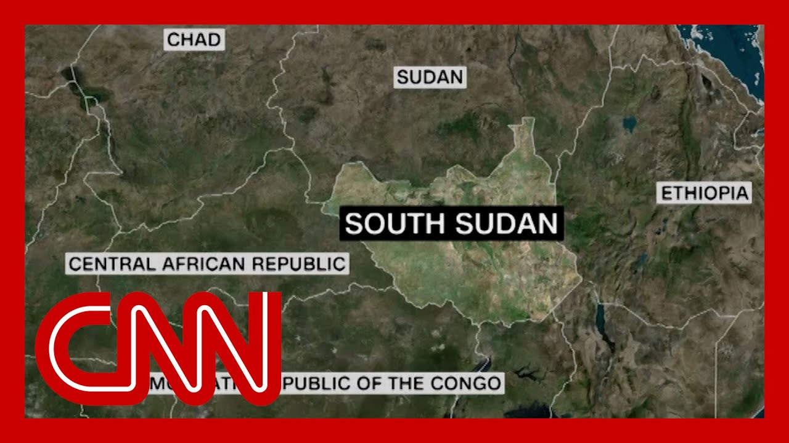

【律师指控特朗普政府将移民驱逐至南苏丹，违反法庭命令】
Summary: Breaking news reveals a federal judge in Boston accusing the Trump administration of potentially violating court orders by deporting a Burmese immigrant to South Sudan, sparking legal chaos and contempt threats.
摘要： 突发新闻显示，波士顿一名联邦法官指控特朗普政府可能违反法庭命令，将一名缅甸移民驱逐至南苏丹，引发法律混乱和藐视法庭威胁。

⏱️ Estimated Reading Time: 16 min
Breaking news from a federal judge in Boston, the latest of several to say the Trump administration could be violating court orders.
波士顿一名联邦法官发布突发新闻，这是多位法官中最新一位称特朗普政府可能违反法庭命令。
The New York Times came out with shortly before airtime.
《纽约时报》在播出前不久发布了这一消息。
A Burmese immigrant apparently put on a plane bound for South Sudan or Myanmar.
一名缅甸移民显然被送上飞往南苏丹或缅甸的飞机。
The government's lawyer claims the second.
政府律师声称是后者。
The man's lawyer says the first judge, Brian Murphy, threatening to hold officials in contempt, warning the administration and it apparently violated an or he issued in April barring this person's deportatio without first giving him time to challenge his and ordering officials to locate the plane.
该男子的律师表示，法官布莱恩·墨菲威胁以藐视法庭罪追究官员责任，警告政府显然违反了他在4月发布的命令，该命令禁止在未给予此人时间申诉前将其驱逐，并要求官员定位飞机。
Quoting now from the Times courtroom account quote during the hearing, Judge Murphy ordered a lawyer for the Justice Department, alienist and Perez to notify everyone involved in the flight to South Sudan from the pilot of the plane to o in the Department of Homeland Security, that they could face criminal contempt sanctions if his ruling was not followed.
引自《纽约时报》法庭记录，听证会上，墨菲法官命令司法部律师、专家及佩雷斯通知所有涉及飞往南苏丹航班的人员，从飞行员到国土安全部官员，若不遵守裁决可能面临刑事藐视制裁。
He also instructed Miss Perez to find out exactly where the plane was and whether it could be turned around mid-flight, and Miss Perez told the judge she did not know where the plane.
他还指示佩雷斯女士查明飞机具体位置及是否能在飞行中返航，佩雷斯女士告诉法官她不知道飞机位置。
More now on this man's case and that of another person from who apparently suffered the same CNN's Priscilla Alvarez and Jeff Zeleny are with us now.
更多关于此案及另一名遭遇相同情况的移民的报道，CNN的普莉希拉·阿尔瓦雷斯和杰夫·泽莱尼将为我们带来最新消息。
There's a lot that is murky abou We're just figuring out Priscill.
目前情况仍有许多不明之处，我们正在逐步厘清。
But what do we know about why these migrants were allegedly deported despite the judge's order?
但我们知道这些移民为何据称在法官命令下仍被驱逐吗？
Well, Don, all of this unfolded very quickl over the course of the day.
唐，这一切在一天内迅速展开。
We initially saw those court filings earlier this afternoon, but this is something that began on Monday and really took off on Tuesday.
我们最初在今天下午看到法庭文件，但事件始于周一，周二才真正爆发。
Here's what the court documents There are declarations here from attorneys from a of the Bur Burmese national that you're ref to there, and a Vietnamese natio.
法庭文件显示，此处有律师关于你所提及的缅甸国民及一名越南国民的声明。
But they say, John, that there could be ten others who were on this flight.
但他们表示，约翰，可能有另外十人也在该航班上。
They say to South Sudan now, in of the Burmese national, what the attorney for that natio is that on Monday, he was notified that he was going to be deported to South Sudan.
关于缅甸国民，其律师称周一他被告知将被驱逐至南苏丹。
He's not proficient in English.
他不精通英语。
He was advised, or he was notified by Ice while he was in detention of thi without an interpreter.
他在拘留期间被ICE告知此事，但未配备翻译。
And this really set off a chain of events of his attorneys trying to figure out why he would be sent to South Sudan.
这引发其律师一系列行动，试图弄清他为何被送往南苏丹。
He did have a removal order, but to his own country, not to another one.
他确有驱逐令，但目的地是其祖国而非第三国。
Now, his attorney says that she an appointment to meet with him virtually this morning.
其律师表示今早本应与他进行线上会面。
Was he checked the detainer locator this morning?
今早是否查询了拘留定位系统？
That's essentially the detention to see where people are.
该系统用于查看被拘留者位置。
He was no longer there.
他已不在系统中。
And when she emailed, Ice, they said the officer respo quote, South Sudan.
她电邮ICE后，官员回复称“南苏丹”。
When she asked where he was remo.
当她询问他被驱逐至何处时。
So you can see why there is so much confusion as to where these detainees who just yesterday were in the detention system, are now no longer there.
可见为何这些昨日仍在拘留系统中的被拘留者如今不知所踪，引发巨大困惑。
Now the attorneys are trying to scramble to figure this out, because even though some of these migrants did have removal orders and could be deported, the question here is where were they deported to?
律师正紧急调查此事，因尽管部分移民确有驱逐令且可被驱逐，问题在于他们被送往何处。
Because if they are sent to a third country, in this case South Sudan, then they would have had to go through a process they would have had to be notifi they would have had the ability to contest their removal to this.
若被送往第三国（如此处的南苏丹），他们本应经过特定程序，获得通知并有权对此提出异议。
Now all of that appears to not have happened, which is why we are seeing all o unfold in these court filings and in the courtroom.
但这一切似乎均未发生，故我们如今在法庭文件和庭审中看到事态发展。
I will also tell you, John, the Department of Homeland Secur has not publicly confirmed a fli to South Sudan, a place that has been on the cusp of civ and where the U.S. advises Americans not to travel to because of the ongoing armed conflict there.
约翰，国土安全部尚未公开确认飞往南苏丹的航班，该国处于内战边缘，美国因持续武装冲突建议公民勿前往。
So certainly a scramble is still unfolding at this hour, John, as attorneys try to figure out where people who they knew were are suddenly nowhere to be found in the U.S. system.
此刻混乱仍在持续，律师试图查明那些原本在系统中的人为何突然消失。
Yeah, it is confusing.
是的，这令人困惑。
So, Jeff, has the Trump administration made any comment on these alleged deportations?
杰夫，特朗普政府对这些据称的驱逐有何回应？
Because this is obviously not the first time they have found themselves in th of a face off with the judge.
显然这并非他们首次与法官对峙。
as of now, John, tonight. No, the white House has not comm on this broadly.
截至目前，约翰，今晚白宫未广泛回应此事。
The administration has not eithe.
政府亦未回应。
And you're right, it is a very familiar story.
你说得对，这是非常熟悉的情节。
As Priscilla was just laying out We have heard this before.
如普莉希拉所述，我们此前已听过类似事件。
If this sounds familiar, it is.
若听起来熟悉，确实如此。
The countries are different.
国家不同。
The locations are different.
地点不同。
To Priscilla's point there at the end, South Sudan is on the the cusp of a civil war and there is a travel warning ag visiting there.
如普莉希拉最后指出，南苏丹处于内战边缘，且有旅行警告。
So that certainly is one point h.
这无疑是一个关键点。
But no, the administration is not responding to this.
但政府未对此回应。
They simply this is one more example of how the immigration procedures are operating in the shadows in many respects.
这再次证明移民程序在许多方面处于暗箱操作中。
But the events of the the a courtroom in Boston that were a relayed by the New York Times and the the official records show that the judges one more judge is increasingly becoming exasperated and angry with the Trump administration, with the DOJ lawyers for their responses or lack of r.
但《纽约时报》及官方记录披露的波士顿法庭事件显示，又一名法官对特朗普政府及司法部律师的回应（或缺乏回应）愈发愤怒。
And we're told there is another hearing tomorro to get more responses to this.
据悉明日将举行另一场听证会以获取更多回应。
So this is very much an ongoing story, John.
约翰，此事仍在持续发展中。
All right. We will learn more, no doubt, in the coming hours.
好的，未来数小时我们无疑将了解更多。
Priscilla Alvarez, Jeff Zeleny, we really appreciate your report on this.
普莉希拉·阿尔瓦雷斯、杰夫·泽莱尼，非常感谢你们的报道。
With us now is Senator Richard Blumenthal, a Democrat from Connecticut who sits on the Judiciary and Armed Services Committee, among others.
现在连线康涅狄格州民主党参议员理查德·布卢门撒尔，他任职于司法及军事服务委员会等机构。
Senator Blumenthal, very nice to.
布卢门撒尔参议员，很高兴您能来。
So look, there's many levels to this stor.
此事涉及多层问题。
If there was a plane with migran sent to South Sudan deporting people to South Sudan, what's your response to that?
若确有载有移民的飞机被送往南苏丹，您对此有何回应？
Sending people to who aren't from South Sudan?
将非南苏丹人士送往该国？
We think to this nation which is on the verge of a civil.
该国处于内战边缘。
if those individuals were on a plane sent to South Sudan, it seems a violation of the cour.
若这些人被送上飞往南苏丹的飞机，似乎违反法庭命令。
Judge Murphy ought to be really.
墨菲法官理应严肃对待。
His order has been violated, and he ought to consider a contempt of court motion.
他的命令被违反，应考虑提出藐视法庭动议。
And no doubt the plaintiffs or considering it.
原告无疑也在考虑此事。
But very seriously, violation of court orders ought to be treated with the utmost of sanctions, because otherwise the law is dead.
但极其严肃的是，违反法庭命令应受最严厉制裁，否则法律形同虚设。
Letter court order aside, and I'll come back to that in a.
暂且搁置法庭命令，我稍后再谈。
Why do you think South Sudan, as a nation, to deport people to if they are not, in fact, Sudane.
您认为为何选择南苏丹作为驱逐目的地，若这些人并非南苏丹国民？
John, you know, it's inexplicabl except that so much of the lawlessness occurring in connection with these deportations is cruel and dumb.
约翰，这无法解释，除非与这些驱逐相关的无法无天行为既残忍又愚蠢。
And so the only explanation could be that it was a way of so punishing them for being illegally in the count to send them to a place where they could be easily subject to persecution, torture, killing.
唯一解释可能是以此惩罚他们非法入境，将其送往易受迫害、酷刑和杀害之地。
And that is the fate, by the way, that they also impose on Afghan who helped our servicemen and women in Afghanis, and as well as protecting diplom who are in this country on temporary protected status.
顺便一提，这也是他们对曾帮助美军的阿富汗人及持临时保护身份的外交人员的处置方式。
And they are now the administration threatening to eliminate that TPS status, send them back to the Taliban, where they have targets on their back, cruel and dumb, really inexplica.
如今政府威胁取消此类TPS身份，将他们送回塔利班靶场，既残忍又愚蠢，实在难以理解。
If there is a subset of people that are easier to vet, who we have a better understanding of who th and what they're going to do when they come here, they're going to receive prefere.
若某类人群更易审查，我们更了解其背景及来美意图，他们将获得优先待遇。
CNN's Larry Meadow now digs into the reality of what's going on in South Africa.
CNN的拉里·梅多现深入调查南非实况。
White South Africans, many of them farmers.
南非白人，多为农民。
And to the American dream, some too young to know.
追寻美国梦，有些人年幼未知。
They've also entered an international firestorm.
他们也卷入国际风波。
Welcome.
欢迎。
Welcome to the United States of.
欢迎来到美利坚合众国。
The U.S. government says it's taking in these refugees fleeing alleged racial discrimination at home.
美国政府称正接纳这些逃离国内种族歧视的难民。
And that's why they've opened the door for them.
因此向他们敞开大门。
And and they don't fit that bill.
但他们并不符合条件。
Those people who have fled are not being persecuted.
这些逃离者并未受迫害。
the American government has got the wrong end of the sti.
美国政府搞错了方向。
South Africa's president has come to the U.S. to set the record straight, and is expected to meet Presiden Donald Trump Wednesday, hoping to reset the two countries relationship.
南非总统赴美澄清事实，预计周三会见特朗普总统，希望重置两国关系。
It was his signing of a controversial land seizure law in January that invoked Trump's right, allowing the states to take unused farmland without compensation if deemed just, equitable and in the public interest.
他1月签署的有争议土地征收法引发特朗普关注，该法允许政府在公正、公平及公共利益前提下无偿征收未使用农地。
South Africa's majority black population still owns just a small percentage of farms more than 30 years after apartheid officially ended.
南非黑人占多数，但种族隔离结束30余年后仍仅拥有少量农场。
While most are owned by the white minority, there were 36 modest farms between April and December last but only seven of the victims were farmers, according to polic.
少数白人拥有大部分农场，警方称去年4月至12月有36起农场袭击，仅7名受害者是农民。
But President Trump calls it a, quote, genocide against white farmers.
但特朗普总统称之为“针对白人农民的种族灭绝”。
They're being killed and we don't want to see people be killed.
他们正遭杀害，我们不愿看到人们被杀。
That's a genocide that's taking.
这是正在发生的种族灭绝。
The accusation, partly stemming from this apartheid era song made popular again by far left opposition leader Julius Malema.
指控部分源于这首被极左反对派领袖朱利叶斯·马勒玛再度炒热的种族隔离时期歌曲。
The Boer, the former PA.
布尔人，前...
but AfriForum, the conservative white Afrikaner lobby group, won't explicitly say there's a white genocide.
但保守派白人阿非利卡人游说团体AfriForum未明确承认存在白人种族灭绝。
There is a call for genocidal ca.
存在种族灭绝呼吁。
People are being killed and people are being tortured.
人们正遭杀害和酷刑。
We need to prevent this from going further.
我们需阻止事态恶化。
AfriForum is described by the US based Southern Poverty Law Center as a white nationalis.
美国南方贫困法律中心称AfriForum为白人民族主义组织。
They have the ire of the US administration, but they're not leaving South Af.
他们引发美国政府愤怒，但不会离开南非。
at AfriForum, we say our future is in Africa because our ancestors came here more than 300 years ago.
AfriForum称我们的未来在非洲，因祖先300多年前便来此。
South African born entrepreneur has fanned the accusations against his homeland, frustratin.
南非出生的企业家埃隆·马斯克加剧对祖国的指控，令人沮丧。
I think they are lying.
我认为他们在撒谎。
They are not even inciting here.
他们甚至未在此煽动。
And Musk is overhyping the situa.
马斯克过度炒作局势。
There's no such as genocide.
不存在种族灭绝。
We must mischaracterize things as a genocide.
我们不应错误定性为种族灭绝。
It is no mass expropriation of l taking place in South Africa.
南非未发生大规模土地征收。
There's no genocide taking place.
未发生种族灭绝。
Musk reportedly wants approvals for his companies to operate in South Africa.
据报道马斯克希望其公司获准在南非运营。
Where is Elon Musk invited when you have that face to face.
当面会谈时马斯克受邀了吗？
Well, I don't know.
我不知道。
they will determine whether Elon Musk is part of it.
他们将决定马斯克是否参与。
President Ramaphosa hopes to mend the rift and convince Trump to attend the G20 summit in Johannesburg in November.
拉马福萨总统希望弥合分歧，说服特朗普出席11月约翰内斯堡G20峰会。
Larry Medawar, CNN that will be.
CNN拉里·梅多报道。